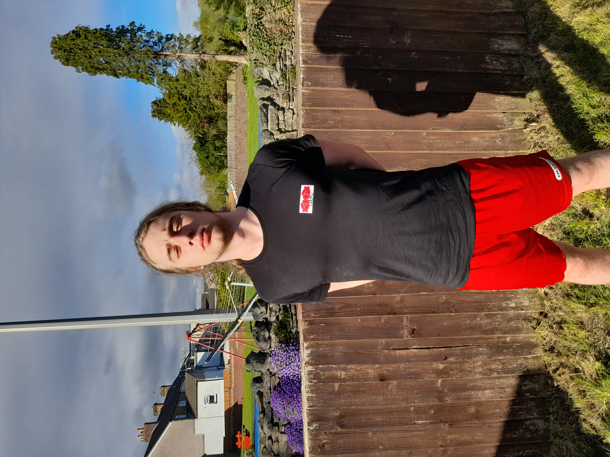
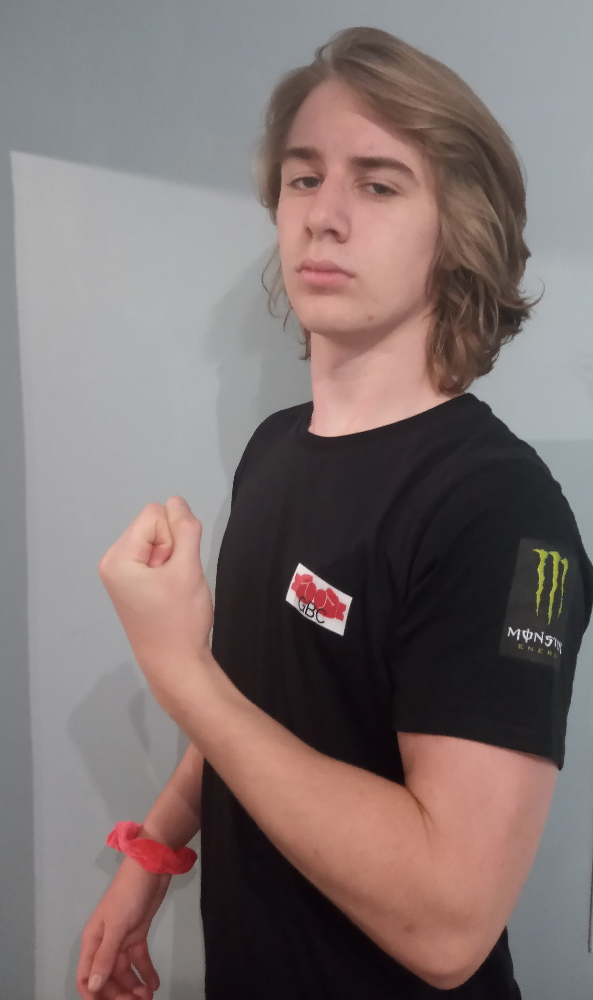
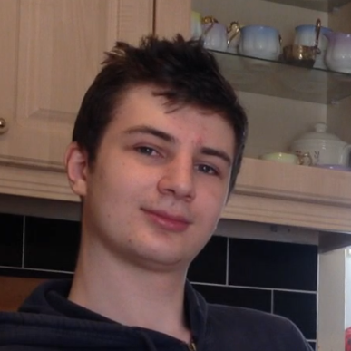
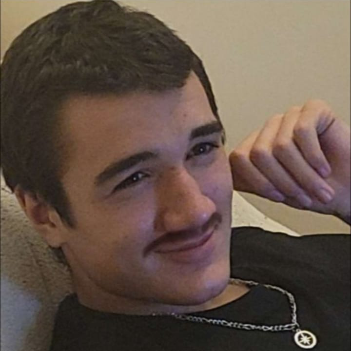

Bagstock
Bagstock
| Statistics | |
|---|---|
| Height | 178cm (5ft 10in) |
| Weight | 76kg (12st 0lb) |
| Reach | 176cm (5ft 9in) |
| Stance | Orthodox |
| Sponsor | Monster |
| Theme Song | Parkway Drive - Crushed |
| @Bagstock_GBC | |
| Division | Cruiserweight |
| Record | 1-0-1 |
Bagstock is the inaugural and current GBC Cruiserweight champion. He is also the longest reigning champion in GBC history, having held the Cruiserweight belt continuously since its inception.
Bagstock has won Lb for Lb Buffest Lad in both 2019 and 2022, as well as Buffest Lad 2022.
Bagstock has had the most fights in the GBC, at 2. He is the only member of the GBC to have a positive boxing record.
Buff Lads 2019
Buff Lads 2019 took place on Saturday August 3rd 2019, where the GBC belts were initially awarded. Challenges were made for the belts in descending order of weight. Jabadobbins went first and decided to challenge for the Heavyweight title. Bagstock went second and chose to challenge for the Cruiserweight title. The Reaper went third and challenged for the Lightweight title, then Quintin Steel went fourth and challenged for the Flyweight title. Rock Kickass declined to make a challenge. This meant that Bagstock became inaugural GBC Cruiserweight champion.
Bagstock's pound for pound score of 7.533 points/kg was the highest of any competitor at Buff Lads 2019, making him Pound for Pound Buffest Lad.
Bagstock's theme at this event was Aqua - Barbie Girl, possibly because he could not think of a theme in time.
Bagstock achieved three of the best scores at Buff Lads 2019, the most pull ups, longest plank, and fastest 100 metres.
Wick, Stock, And 2 Smokin' Barrels
On Thursday August 15th 2019, GBC Number 1 Contender Candlewick challenged Bagstock for the Cruiserweight title. The fight took place on Sunday September 22nd 2019.
After a long buildup with a large amount of twitter drama and trash talk, the fight finally happened. Candlewick came out swinging at the start, dictating the pace of the fight and forcing Bagstock to fight off his back foot. Bagstock relied on tactical clinching and counterpunching in much of the first round. All 3 judges scored round 1 10-9 to Candlewick.
The second round saw Candlewick visibly tired. His arms started to hang at his sides, and now it was Bagstock dictating the pace of the fight. Midway through the round, Candlewick's gumshield fell out. The referee was unsure whether he had spat it out deliberately to take a time out, so he decided to be cautious, rule in Candlewick's favour and not score this stoppage as a knockdown. Bagstock kept on swinging and grinding Candlewick down. All 3 judges scored round 2 10-9 to Bagstock.
The third round saw Candlewick even more tired than the second. He clinched a lot, leaned on the fences, and leaned on Bagstock to rest. Bagstock's pace and power remained unchanged from the previous rounds. If anything, it improved, as Bagstock became used to Candlewick's style and started slipping his overhand rights and counterpunching with right hooks to the body. After being told to break a clinch against the fence, Candlewick continued to lean against the fence, exhausted. The referee asked him to step into the centre of the ring and asked if he was okay and if he wanted to continue. Candlewick replied that he would "give it until the end of the round". The referee allowed him to continue, this time scoring a knockdown against Candlewick. With 20 seconds until the end of the round, Bagstock had Candlewick against the opposite fence, and Candlewick seemed unable to keep his hands up to block Bagstock's punches. The referee finally stepped in and called off the fight, earning Bagstock the win by KO. When asked, all 3 judges said they would have scored the round 10-8 or 10-7 to Bagstock.
Continued Training
After the fight, Bagstock went back into training, not knowing where his next challenge would come from. He joined a boxing gym and bought a t-shirt.
He also grew his hair out, prompting many situations where he got confused for Bjorn Ulvaeus from ABBA.
Accusations of Mum Killing
On the 3rd of June 2020, the independent News provider GBC News (@GBC__News) reported that Bagstock had been accused of killing his mum based on claims made during the press conference leading up to Wick, Stock, And 2 Smokin' Barrels.
Bagstock defended himself against these allegations, at first denying them, but later GBC News published a video with evidence that he had indeed said that he killed him mum. The GBC launched an official investigation.
No evidence was found by the investigation, and it seemed that Bagstock was innocent. Why then did he claim to kill his mum? This mystery remains unsolved.
The Riser Of The Dead
After Jabadobbins was presumed killed by the russian mafia, the Heavyweight belt he had previously held became vacant. The top two contenders in the GBC were Bagstock and The Reaper, so Brick Buffpunch began organising a fight between them to decide the new Heavyweight champion. However, when Jabadobbins returned, Brick Buffpunch was forced to consider him a contender. Thus Brick Buffpunch organised a twitter poll in which all fans of the GBC were asked to vote on the fight they most wanted to see: Jabadobbins vs The Reaper, The Reaper vs Bagstock, or Bagstock vs Jabadobbins.
The poll was very close, but was eventually won by The Reaper vs Bagstock. This fight was booked as The Riser Of The Dead.
The fight took place on the 15th of April 2022, with a sold-out Tondu garden arena in attendance. Spectators even took spots in the nearby park and illegally filmed the fight.
The fight was extremely close and ended up being ruled a split decision draw. With no valid claimant yet to the Heavyweight belt, it remained vacant. Bagstock held onto the Cruiserweight belt and returned to training.
Boxing Record
| Record | Opponent | Event | |
|---|---|---|---|
| Win | 1-0-0 |  Candlewick |
Wick, Stock, And 2 Smokin' Barrels |
| Draw | 1-0-1 |  The Reaper |
The Riser Of The Dead |
Buff Lads Record
| Buff Lads 2019 | |
|---|---|
| 100 Metres | 17.09s (51 pts) |
| Bench Press | 50kg |
| Bicep Curl | 35kg |
| Clean & Jerk | 35kg |
| Countdown | 19 pts |
| Deadlift | 100kg |
| Overhead Press | 30kg |
| Plank | 2:09 (43 pts) |
| Pull Ups | 6 (24 pts) |
| Squat | 65kg |
| Total | 452 pts |
| Weight | 60kg |
| Lb for Lb | 7.533 |
| Buff Lads 2022 | ||
|---|---|---|
| 100 Metres | 16.04s (55 pts) | -1.05s |
| Bench Press | 80kg | +30kg |
| Bicep Curl | 55kg | +20kg |
| Clean & Jerk | 60kg | +25kg |
| Countdown | 35 pts | +16 pts |
| Deadlift | 140kg | +40kg |
| Overhead Press | 50kg | +20kg |
| Plank | 2:36 (52 pts) | +0:27 |
| Pull Ups | 12 (48 pts) | +6 |
| Squat | 80kg | +15kg |
| Total | 452 pts | +203 pts |
| Weight | 60kg | +16kg |
| Lb for Lb | 7.533 | +1.085 |